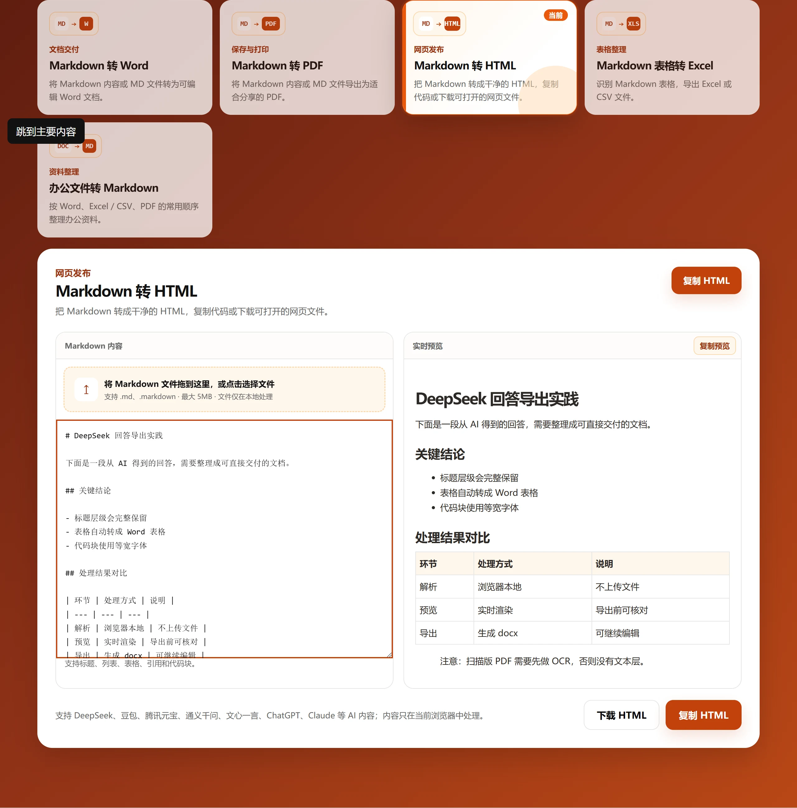

Markdown转HTML
如何把Markdown转换为干净HTML
当博客、CMS、邮件编辑器或静态网页不直接支持Markdown时，可以先转换成HTML，再粘贴到目标平台的HTML或源码模式。

转换步骤
- 粘贴Markdown或AI生成的草稿。
- 预览标题、链接、表格、引用和代码块。
- 复制HTML，粘贴到目标平台的源码模式。
HTML片段还是完整网页？
HTML片段只包含文章正文，通常更适合CMS。完整网页还需要DOCTYPE、语言、标题、描述和视口等元数据。
发布前安全检查
检查所有外部链接和嵌入内容，不要把来源不明的脚本直接放入网站。Aixuno主要生成Markdown对应的结构化HTML。
导出的文件里有什么
下载得到的是完整的 HTML5 文档，不是片段。里面有 doctype 声明、lang 属性、UTF-8 编码声明、viewport 元标签和 title 元素，转换后的内容放在 body 里。
刻意不包含什么
- 样式表。不带任何 CSS，页面会继承目标站点提供的样式。
- 脚本。输出的纯静态结构，不附带任何行为。
- 站点框架。不包含 Aixuno 的导航、页脚或品牌元素。
这让文件成为一个「模板素材」而不是成品页面——这通常正是需要的，因为把带样式的 HTML 粘进已有站点，往往和它自己的设计系统打架。
什么时候该选 HTML
| 去处 | 为什么用 HTML | 用之前要先改什么 |
|---|---|---|
| 博客或 CMS | 语义标签能对应到多数编辑器 | CMS 自己会包一层文档结构时，去掉外层包装 |
| 邮件模板 | 标题和列表能保留 | 邮件客户端需要内联 CSS，得另外加 |
| 静态站 | 可以直接另存为片段 | 嵌入已有布局时去掉 doctype |
关于 HTML 输出的问题
导出的文件带样式吗？
不带。文件只有结构，样式由放置它的站点提供。
能直接粘进 CMS 吗？
能。但 CMS 自己会生成文档骨架时，要去掉外层的 doctype 和 body。
这个文件能单独打开吗？
能。它是完整的 HTML5 文档，含 doctype、编码声明、viewport 和 title。